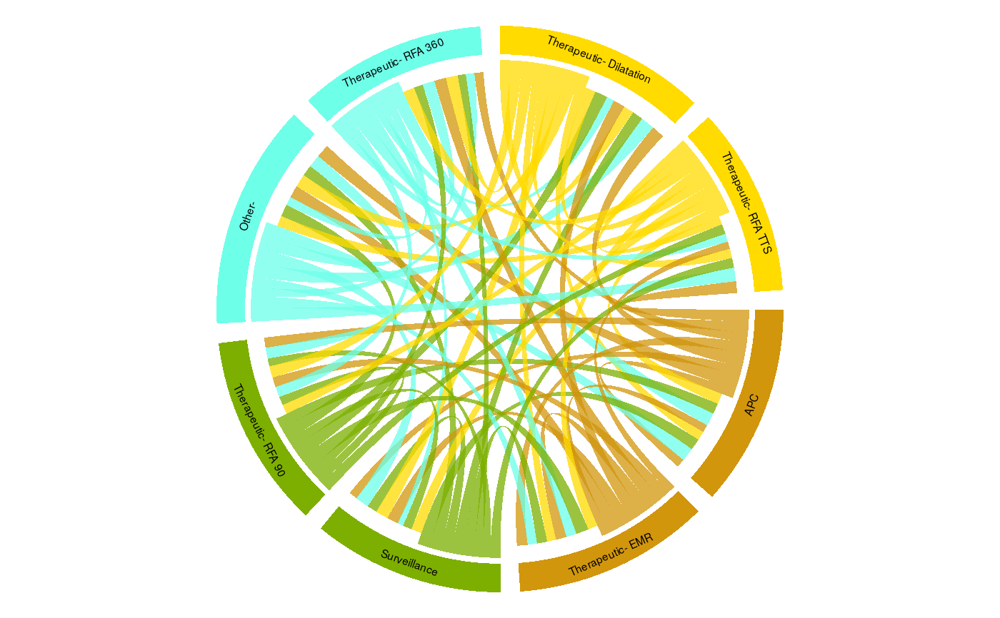

This allows us to look at the overall flow from one type of procedure to another using circos plots.
PatientFlow_CircosPlots(dataframe, Endo_ResultPerformed, HospNum_Id, ProcPerformed)
| dataframe | dataframe |
|---|---|
| Endo_ResultPerformed | the column containing the date of the procedure |
| HospNum_Id | Column with the patient's unique hospital number |
| ProcPerformed | The procedure that you want to plot (eg EMR, radiofrequency ablation for Barrett's but can be any dscription of a procedure you desire) |
# This function builds a circos plot which gives a more aggregated # overview of how patients flow from one state to another than the # SurveySankey function # Build a list of procedures Event <- list(x1 = "Therapeutic- Dilatation", x2 = "Other-", x3 = "Surveillance", x4 = "APC", x5 = "Therapeutic- RFA TTS", x5 = "Therapeutic- RFA 90", x6 = "Therapeutic- EMR", x7 = "Therapeutic- RFA 360") EndoEvent<-replicate(2000,sample(Event,1, replace = FALSE)) # Merge the list with the Myendo dataframe fff<-unlist(EndoEvent) fff<-data.frame(fff) names(fff)<-"col1" Myendo<-cbind(fff$col1,Myendo) names(Myendo)[names(Myendo) == 'HospitalNumber'] <- 'PatientID' names(Myendo)[names(Myendo) == 'fff$col1'] <- 'EndoEvent' # Myendo$EndoEvent<-as.character(Myendo$EndoEvent) # Run the function using the procedure information (the date of the # procedure, the Event type and the individual patient IDs) hh<-PatientFlow_CircosPlots(Myendo,"Dateofprocedure","PatientID","EndoEvent")#>#>rm(Myendo) rm(EndoEvent)